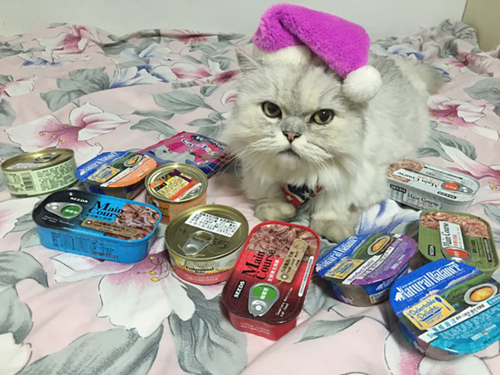
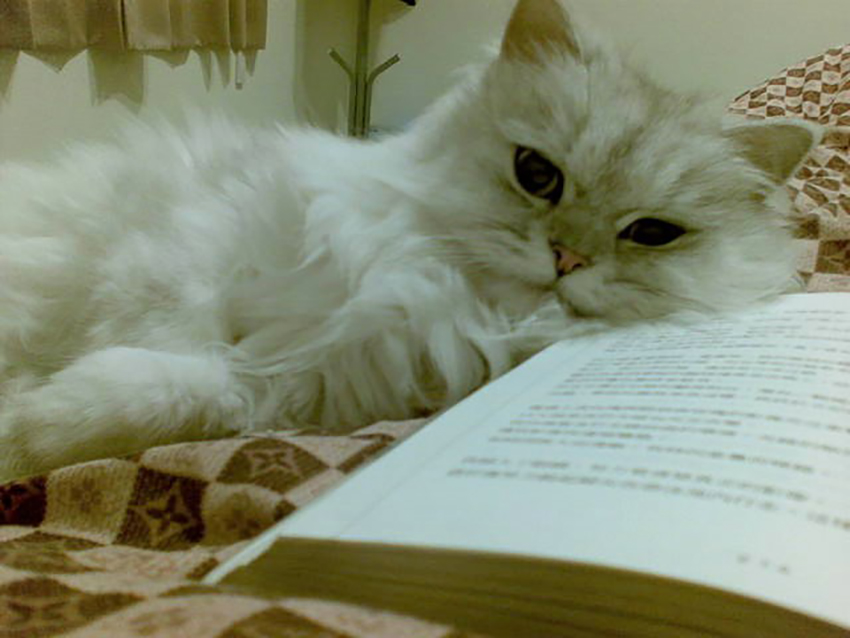
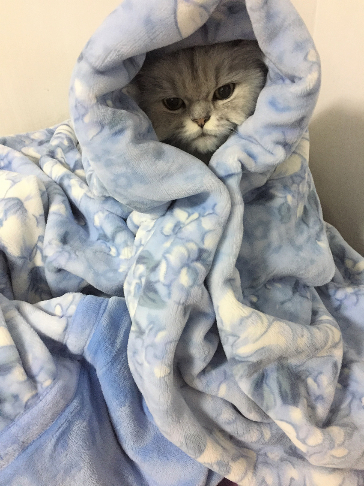

家有喵星人
連柏柔│企業產品硬體工程一處
金吉拉阿二前後經歷了兩個主人棄養，第一任飼主棄養的原因是因為阿二在電腦螢幕上撒尿，第二任飼主則是因為懷孕無暇照顧牠，最後才由我收養阿二。幸運的是，牠來家裡後，除了天性喜歡咬塑膠袋之外，並沒有其他搞破壞的情況，跟家裡的狗也能和平相處。
|  |
圓滾滾的大眼睛及一身漂亮的銀灰色長毛，是金吉拉獨有的特色，缺點是我的衣服上常常會沾黏到貓毛，只能當作是喵星人留下愛的記號。夏天的時候，擔心貓太熱了，乾脆將牠身體的毛剃短，但每次剃完毛，阿二就會開始自閉幾天，想找地方躲起來，過幾天才會恢復正常，原來貓也愛漂亮？
|  |
許多人對貓的印象是貓很冷酷，不愛理人，但阿二是隻黏人又愛撒嬌的貓，通常一喚就來，喜歡對主人喵喵叫、喜歡伸出貓掌摸主人的臉、喜歡在主人身上踩踩，也經常來床上陪睡，霸佔我的被子。我的人生因為貓狗的陪伴，過得多采多姿！
|  |
一日早上起來，發現阿二後腿僵硬無力，走路東倒西歪，甚至站都站不好…原來十九歲的阿二，身體已漸漸老化，看完醫生並且持續食用保健品後，後腳無力的情況稍有改善，但有時還是會看到牠後腳因不明原因抽筋抖動，真令人心疼！
不久的未來，阿二就要回去喵星球了，只希望阿二能開開心心、沒有病痛的走完剩下的日子，並且記得牠的”貓”生裡，有這麼愛牠的爸爸媽媽和屁孩狗們陪牠走過！